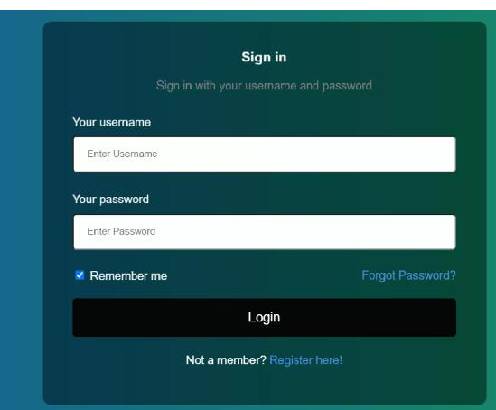
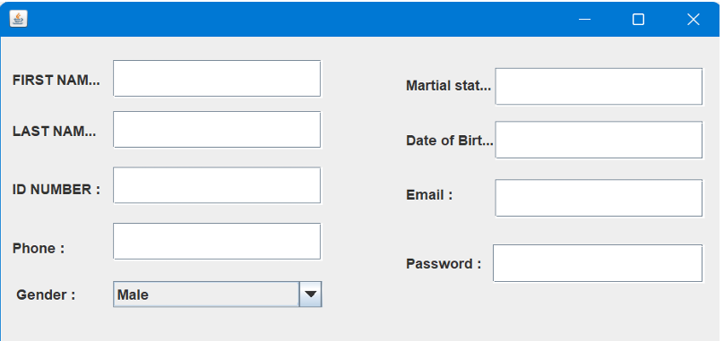

Database name used: online permission system.
This is table is table that will be only created by admin and will hold other system users apart from admin it will give them USER NAME and PASSWARD that they will use to login. .
This table to contain all permission approvals in the organization and will be created by system admin and few allowed user depending on user type.
this was a database table where deal with permissions which was added by students
this table indicates student account which was added by admin .
this table indicates students which was added by admin
this table indicates super admin
In this chapter I will be describing how powerful general purpose programming language was used to create the analyzed system. Under this chapter I will undergo full detail of how everything will function together with database that have been describe above and how it cope with full analyzed system.
3.2 Tools used to develop this system in java programming:
Eclipse IDE: an integrated development environment used in computer programming. It contains a base workspace and an extensible plug-in system for customizing the environment. It is the second-most-popular IDE for Java development, and, until 2016, was the most popular.
this was the first page of the system where system will choose destination depending on the function he/she possess in the organization where he need to log in. if he has not account he may create it and comes as signup form
admin homepage provides a menu driven interface for the administrator. when administator logs in they presented with options such as managing courses,users,viewing reports,managing system reports and logging out.
In conclusion, the Java project on the online permission system has successfully achieved its objectives of providing a robust platform for managing permissions in an online environment. Key features of the system include user authentication, role-based access control, permission assignment, and a user-friendly interface for administrators. Throughout the development process, several challenges were encountered, such as ensuring secure authentication mechanisms, handling complex permission hierarchies, and optimizing database queries for performance. However, these challenges were effectively addressed through careful design, implementation, and testing. The project demonstrates the power and flexibility of Java in building scalable and reliable web applications. By leveraging Java's object-oriented principles, modular design patterns, and a wide range of libraries and frameworks, the system was able to meet the requirements of both administrators and end-users. Looking ahead, there are several opportunities for further enhancement and refinement of the online permission system. These include implementing advanced features such as audit logging, fine-grained access control, and integration with external identity providers.